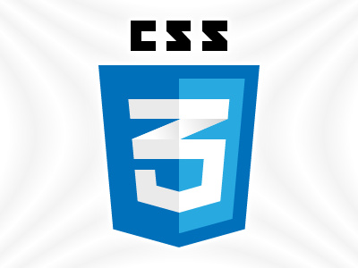

My adventurous new live as a junior web developer started in October 2019 when my training at BeCode began. So far, every day was challenging but rewarding at the same time.
The journey of a thousand miles begins with a single step.
― Lao Tzu
Git is a distributed version-control system for tracking changes in source code during software development. It is designed for coordinating work among programmers, but it can be used to track changes in any set of files. Its goals include speed, data integrity and support for distributed, non-linear workflows. In the first week we learned git to manage our future work projects.
GitHub is an American company that provides hosting for software development version control using Git. Basicly, it's a social network for projects, which allows for version control. If you want to be visible as a web developer, github is the place to be. SO one of the first things we did in our training was to start a github account. Since then I am using github every day at work.
The terminal gets useful once you get used to it. It speeds up processing data and you really feel like a hacker when you're working on it.
In the second week of our training we started using HTML, which is the basic language of the web. It is the programming language you use to put content to a webpage. HTML 5 includes new tags that are used to structure your webpage and write semantic code. This way search engines like google have it easier to search the webpage for their content, visual impaired users that use screen readers have it easier to have an overview and coders can better maintain their code as it is more intuetiv what the code is doing.

In the second week we also started using CSS3, which is used to bring design and style to the webpages. This way you can make your page more attractive for users.